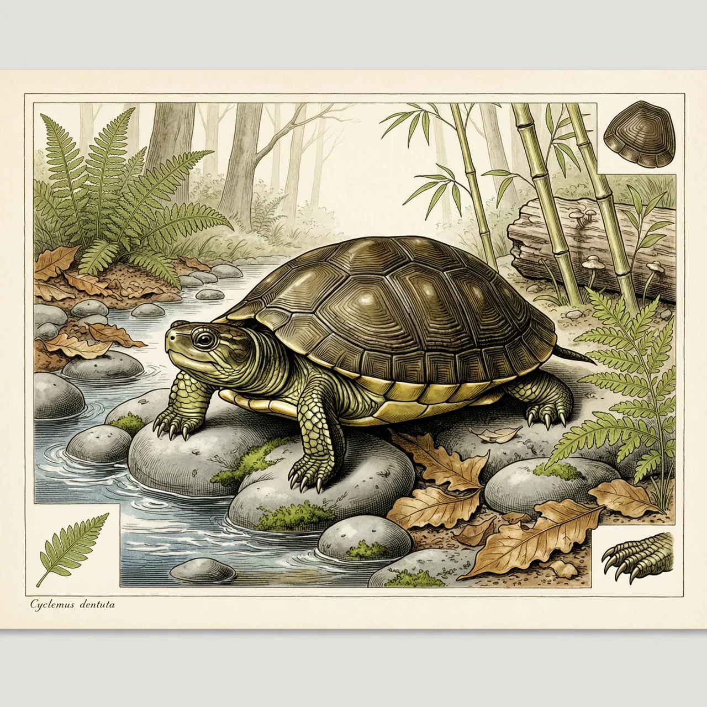
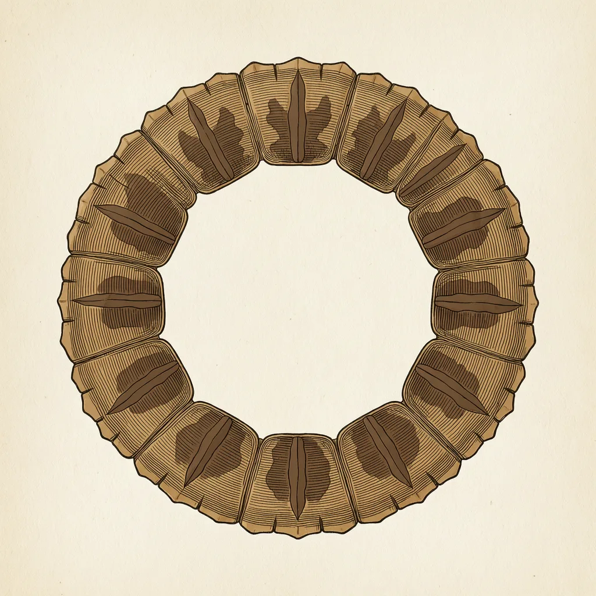

齿缘摄龟生活在南亚与东南亚的山区溪流里，分布从印度到印度支那，向南经马来半岛至巴厘、婆罗洲和菲律宾，北抵中国云南、广西，海拔上限1300米。它因背甲裙边的锯齿状缘盾得名，模式产地却同时写着印度、孟加拉和爪哇，现被列为近危。
山溪漫过卵石，水声不停，齿缘摄龟就住在这样的山区溪流里。它的分布从印度延伸到印度支那，向南经马来半岛和印度尼西亚，直到巴厘、婆罗洲、菲律宾，向北进入中国大陆的云南、广西。在这一大片热带区域里，齿缘摄龟活动的海拔上限为1300米：顺着山溪往上，水越来越凉、越来越细，齿缘摄龟的分布也就停在这条线附近。
齿缘摄龟的名字写在壳上。背甲一圈缘盾的后缘并不平整，而是呈锯齿状，像裙边被剪出一排钝齿。对一只龟来说，这圈壳就是它活命的本钱：受惊时头、四肢和尾巴收进甲内，带齿的裙边成了身体最外一圈边界。齿缘摄龟这个中文名，也把鉴定要点直接摆在眼前——先看裙边有没有锯齿，再确认是不是它。
还有一件事少见。给一个物种定名，通常要留下模式产地，也就是当初那份定名标本采自哪里。齿缘摄龟的条目里，模式产地同时写着三处：印度、孟加拉和印度尼西亚爪哇。一个物种的名字钉在南亚与东南亚的两端，想知道最早那份记录出自哪里，得跑三个国家。至于现在，它被IUCN红色名录列为近危，而它自己照常待在1300米以下的那条山溪里。
